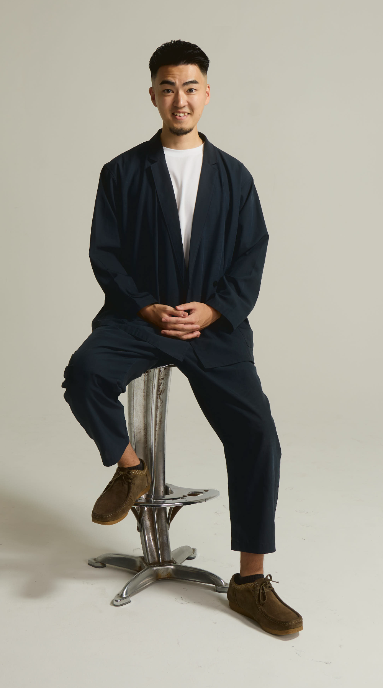

はじめまして。栗山豪平と申します。
大学在学中から人材の仕事に関わり、プレイヤー、マネージャーを経験して、今は事業責任者として仕事をしています。
これまで仕事をする中で、うまくいったことも、失敗したことも、たくさんありました。その中で学んできたことや、経験してきたことを、自分の中だけに置いておくのではなく、これから出会う人たちに惜しみなく使っていきたいと思っています。
今の仕事がしんどい。この先どうしたいのか分からない。誰に相談すればいいのかも分からない。そういう時期は、たいていの人にあります。僕にもありました。
キャリアのこと、採用のこと、人材のこと。この領域はこれまで1500名以上の相談を受けてきたので、たいていのことは答えられます。そこは遠慮なく頼ってください。
そのうえで、変化の早い時代だからこそ、一方的に何かを教えるような関係ではなく、お互いに考え、刺激をもらいながら、一緒に成長していける関係が理想だと思っています。
このページは、紹介をきっかけにお会いする方に向けて書いています。
転職先を紹介して、入社したら終わり。
僕は、そういう関係ではなく、その後もお互いの仕事や人生について話せる関係を作りたいと思っています。
僕自身もまだ20代です。
プレイヤーとして働き、マネージャーを経験し、今は事業責任者として仕事をしています。
もちろん、何かをやり切ったわけではありません。今も毎日のように目の前の課題にぶつかっています。
チームのことだったり、事業の判断だったり。というより、自分自身のことで詰まっている時間が一番長い気がします。どうすればもっと良い仕事ができるんだろう、と今も考え続けています。
だからこそ、これまで仕事をする中で経験してきたことや、失敗したこと、学んできたことを、同じ20代で仕事に向き合っている人たちと共有したいと思うようになりました。
僕が一方的に何かを教えるというよりも、お互いに仕事を頑張りながら、ときどき立ち止まって話せる。そんな関係を作りたいと思っています。
僕は大学在学中から人材紹介の仕事に関わってきました。たくさんの転職に関わる中で、ずっと感じてきたことがあります。
それは、転職先が決まった瞬間よりも、入社した後の方が圧倒的に大事だということです。
新しい会社に入れば、当然うまくいかないことがあります。
成果が出ない時期が続いたり、上司と噛み合わなかったり。思っていた仕事と違う、と感じることもある。周りと比べて焦っているうちに、うまくいかない理由が全部、自分の力不足のように思えてくる。
僕自身も、仕事をする中で何度も同じような壁にぶつかってきました。
だから、転職を支援した人と入社した瞬間に関係が終わってしまうことに、ずっと違和感がありました。
せっかく縁があって出会ったのであれば、転職するときだけではなく、入社した後も話したい。うまくいったことも、うまくいかなかったことも聞きたい。
僕が経験してきたことで役に立つものがあれば共有したいし、逆に僕自身もみなさんから学びたい。
僕にとって転職支援は、そんな関係を作る一つの入り口です。
転職するかどうかは決まっていなくて大丈夫です。1年前からのご相談でも構いません。
転職した方がいいなら会社を探します。動かない方がいいなら、それも一緒に考えます。
一般的な転職支援は、ここで終わります。
ここは通過点です目の前の課題からキャリア、仕事以外のことまで。期限は設けていません。
希望する方とは、転職した後もメンターとして継続的に関わっています。扱う範囲は、だいたいこのあたりです。
ひとつは、目の前の課題の解決。成果が出ない、上司と噛み合わない、任された仕事が重すぎる。何が起きているのかを一緒に整理して、次に何をするかまで落とします。
ふたつめは、これからのキャリア。今の会社で何を積むべきか、次にどこへ向かうのか。転職を前提にせず、長い目で考えます。
みっつめは、仕事以外のことです。お金のこと、住む場所、家族やパートナーのこと、何歳までにどうなっていたいか。仕事の話だけで人生は決まらないので、こういう話も普通にします。相談というより、ただ話すだけの時間になることも多いです。
とはいえ、いつも重い話をするわけではありません。
最近仕事どう？
から始まって、一緒に考えたり、僕だったらどうするかを話したり、必要であれば率直に意見を伝えたりします。
僕自身、プレイヤー、マネージャー、事業責任者と立場が変わるたびに、仕事の見え方も悩みも変わってきました。今も新しい課題にぶつかり続けています。だから、知らないことは知らないと言いますし、一緒に考えます。
話す場所は、オンラインでも、カフェなどで直接会っても構いません。文字や画面越しだと伝わりにくいこともあるので、近くにいるなら会って話す方が早い気がしています。
費用は一切いただきません。転職のご支援から入社後の関わりまで、すべて無料です。
相談をもらったからといって、必ず転職を勧めるわけではありません。
話してみた結果、「今の会社でもう少し頑張った方がいいと思う」と伝えることもあります。
転職自体が目的ではないからです。
転職した方がいいなら一緒に会社を探す。まだ動かない方がいいなら、それも一緒に考える。1年後にまた話すでもいいと思っています。
長く付き合う前提だからこそ、そのとき一番良いと思うことを率直に話したいと思っています。
現在は、知人やこれまでご支援した方から紹介いただいた方だけをお受けしています。
理由はシンプルで、一人ひとりと、長く付き合いたいからです。
転職相談だけなら、もっと多くの方と話せると思います。
ただ、入社した後のことまで聞いたり、定期的に話したり、一人ひとりのことをちゃんと覚えていたいと思うと、どうしても人数には限りがあります。
なので、今は紹介という形にしています。

栗山 豪平
大学在籍中に株式会社ミギナナメウエへ入社。人材紹介事業の立ち上げに携わり、その後マネージャーとして事業運営を経験しました。
2024年からは、会社の主軸となる事業をもう一つ増やすための新規事業として、キャリアコーチング事業を立ち上げました。社内で初めての新規事業で、その責任者を任せてもらっています。これまで1500名ほどのキャリア支援に関わってきました。
ただ、僕自身はまだキャリアの途中です。事業責任者になった今も、できないことだらけです。
マネジメントで悩むし、意思決定を間違えることもあります。自分の弱さに気づかされるのは、だいたい後になってからです。
そのたびに本を読んだり、人に教えてもらったり、心理学や哲学を学んだりしながら、自分なりに仕事と向き合っています。
そうやって自分が学んできたことを、自分の中だけに置いておくのではなく、同じように20代で仕事に向き合っている人たちに還元したい。そして僕自身も、みなさんの挑戦から学びたい。
そんな気持ちで、この活動をしています。
転職したい人も。
今の会社でもう少し頑張りたい人も。
これから何をしたいのか分からない人も。
紹介をきっかけに出会ったのであれば、まずは一度話しましょう。転職するかどうかは、それから一緒に考えればいいと思っています。
友だち追加のあと、「〇〇さんの紹介です」とだけ送ってください。そこからお話ししましょう。